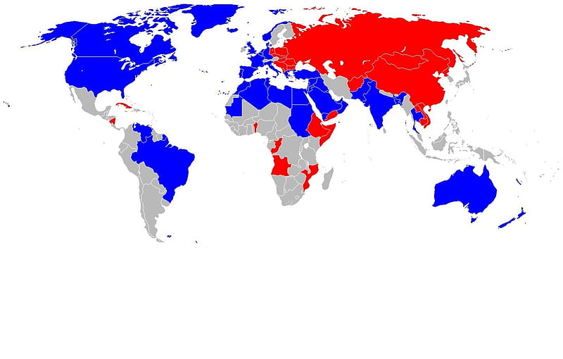

Древняя Русь: истоки государства
Образование Древнерусского государства
Древнерусское государство возникло в IX веке в результате объединения восточнославянских
племён под властью династии Рюриковичей. Согласно "Повести временных лет", в 862 году
славянские и финно-угорские племена призвали на княжение варяга Рюрика, что положило
начало правящей династии.
Интересный факт: Название "Русь" первоначально относилось к варяжским дружинам,
пришедшим с Рюриком, и лишь позднее распространилось на всю территорию
Древнерусского государства.
Крещение Руси
В 988 году князь Владимир Святославич принял христианство по византийскому образцу и
крестил киевлян. Это событие имело огромное значение для развития русской культуры,
письменности и государственности, связав Русь с византийской цивилизацией.
Смутное время (1598-1613)
Причины и ход Смуты
Смутное время началось после пресечения династии Рюриковичей со смертью царя Фёдора
Иоанновича в 1598 году. Период характеризовался гражданской войной, иностранной
интервенцией, появлением самозванцев (Лжедмитрий I и II) и глубоким кризисом
государственности.
Интересный факт: Польско-литовские войска занимали Москву с 1610 по 1612 год, пока не
были изгнаны народным ополчением под руководством Минина и Пожарского.
Воцарение Романовых
В 1613 году Земский собор избрал на царство Михаила Фёдоровича Романова, что положило
конец Смуте и начало новой династии, правившей Россией до 1917 года.
Эпоха Петра I (1682-1725)
Реформы Петра Великого
Пётр I провёл масштабные реформы, направленные на модернизацию России по европейскому
образцу: создал регулярную армию и флот, реорганизовал систему государственного
управления, развивал промышленность и образование, перенёс столицу в Санкт-Петербург.
Интересный факт: Пётр I лично участвовал в Великом посольстве (1697-1698) инкогнито
под именем урядника Преображенского полка Петра Михайлова, чтобы изучить европейские
технологии и привлечь специалистов в Россию.
Северная война и провозглашение империи
После победы в Северной войне (1700-1721) против Швеции Россия получила выход к
Балтийскому морю и в 1721 году была провозглашена империей, а Пётр принял титул
императора.
СССР во Второй Мировой войне (1941-1945)

Великая Отечественная война
22 июня 1941 года Германия напала на СССР, начав самую кровопролитную войну в истории
России. Ключевые события: битва за Москву (1941), Сталинградская битва (1942-1943),
Курская битва (1943), операция "Багратион" (1944), взятие Берлина (1945).
Интересный факт: Потери СССР во Второй мировой войне составили около 27 миллионов
человек — больше, чем потери любой другой страны.
Итоги войны
Победа в войне укрепила международное положение СССР, который стал одной из двух
сверхдержав наряду с США. В состав СССР вошли новые территории, а в Восточной Европе
установились просоветские режимы.
Холодная война (1947-1991)

Противостояние СССР и США
После Второй мировой войны между СССР и западными странами во главе с США началось
глобальное противостояние, выражавшееся в гонке вооружений (включая ядерные),
идеологической борьбе и космической гонке.
Интересный факт: Кульминацией космической гонки стал полёт Юрия Гагарина в 1961 году
— первый человек в космосе. Однако первым искусственным спутником Земли также был
советский "Спутник-1" (1957).
Распад СССР
Экономические проблемы, национальные движения и политические реформы привели к распаду
СССР в 1991 году, что ознаменовало окончание холодной войны и изменение мировой
политической системы.